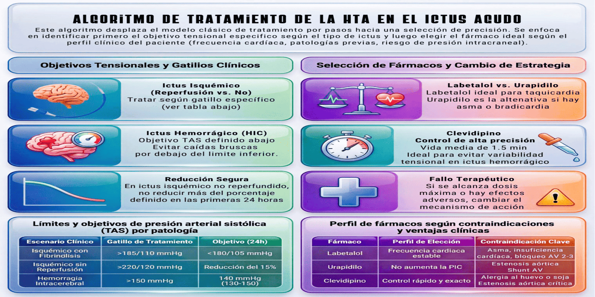
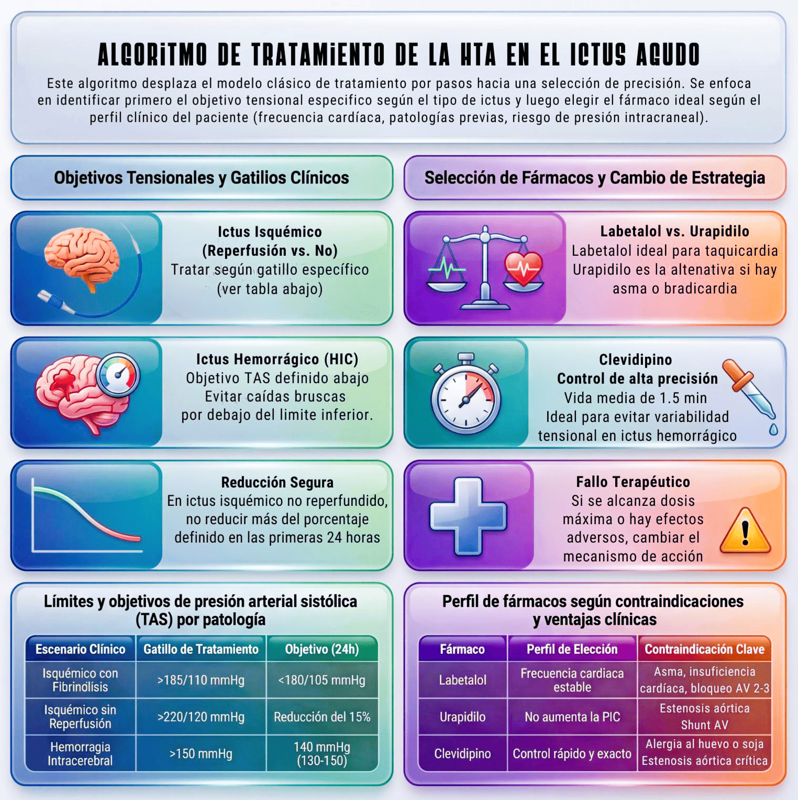

El manejo de la tensión arterial (TA) en el ictus agudo debe individualizarse en función del tipo de ictus (isquémico o hemorrágico), la indicación de terapias de reperfusión y la situación clínica del paciente. El objetivo es optimizar la perfusión cerebral evitando tanto la hipoperfusión como la transformación hemorrágica o la expansión del hematoma.
- Monitorización estrecha de la TA, con controles cada 5-15 minutos en fase aguda.
- Preferencia por fármacos intravenosos de acción rápida y titulables.
- Evitar descensos bruscos de TA, especialmente en ictus isquémico.
- Mantener estabilidad tensional, minimizando la variabilidad.
Ictus isquémico
- Candidatos a reperfusión (fibrinolisis intravenosa y/o trombectomía):
- Umbral de tratamiento previo a reperfusión: TA > 185/110 mmHg.
- Objetivo tras el tratamiento de reperfusión: < 180/105
mmHg durante las primeras 24 horas.
- Mantener cifras estables durante las primeras 24 horas tras la reperfusión.
- No candidatos a reperfusión:
- Umbral de tratamiento: TA > 220/120 mmHg.
- Objetivo: reducción aproximada del 15 por ciento en las primeras 24 horas.
- Evitar reducciones intensivas o rápidas salvo situaciones específicas.
- Umbral de tratamiento: TAS > 150 mmHg.
- Objetivo: reducción precoz a aproximadamente 140 mmHg (rango 130-150 mmHg).
- Evitar descensos por debajo de 130 mmHg.
- En TAS > 220 mmHg, considerar reducción intensiva con monitorización estrecha.
- Priorizar un descenso controlado y sostenido, evitando variabilidad.
Selección de fármacos
La elección debe basarse en el perfil clínico
del paciente y las contraindicaciones:
- Labetalol: fármaco de uso inicial frecuente, especialmente en bolos intravenosos. Indicado en pacientes con frecuencia cardiaca estable.
- Evitar en asma, insuficiencia cardiaca descompensada, bradicardia grave o bloqueo auriculoventricular avanzado.
- Urapidilo: alternativa eficaz, especialmente si se desea evitar bradicardia o existen contraindicaciones para betabloqueantes. No incrementa la presión intracraneal.
- Evitar en estenosis aórtica o shut
AV.
- Clevidipino: antagonista del calcio de vida media
ultracorta, administrado en perfusión intravenosa. Permite
un control rápido, preciso y finamente titulable de
la presión arterial. Indicado especialmente en
situaciones donde se requiere estabilidad tensional
estrecha, como en la hemorragia intracerebral aguda.
No ha demostrado superioridad clínica frente a otros agentes
intravenosos, pero su perfil farmacocinético lo hace
especialmente útil en el control dinámico de la tensión
arterial.
- Contraindicaciones y precauciones de clevidipino: alergia a huevo o soja, dislipemia grave, pancreatitis, estenosis aórtica crítica.
- Nitroprusiato de sodio: opción de último
recurso en casos refractarios. Uso restringido en
entorno monitorizado de UCI.
- Riesgo de aumento de presión
intracraneal. Contraindicado en atrofia óptica de Leber,
ambliopía e HTIC.
- Iniciar tratamiento con bolos intravenosos o perfusión continua según situación clínica.
- Titulación progresiva según respuesta tensional.
- Reevaluación continua de TA y estado neurológico.
- Si no se alcanza el objetivo o aparecen efectos adversos, cambiar a un fármaco con diferente mecanismo de acción.
Mantenimiento y transición a tratamiento oral
Una vez alcanzado el objetivo tensional:
- Mantener cifras estables evitando variabilidad significativa.
- Reducir progresivamente la intensidad del tratamiento intravenoso, evitando suspensiones bruscas.
- Iniciar tratamiento antihipertensivo por vía oral de forma precoz, una vez el paciente esté clínicamente estable y con capacidad de tolerancia oral.
- Solapar durante un periodo transitorio el tratamiento intravenoso y oral para evitar rebote hipertensivo.
- Seleccionar tratamiento oral según perfil del paciente y comorbilidades.
- En ictus isquémico, evitar descensos excesivos en fase subaguda precoz.
- En hemorragia intracerebral, mantener control estricto de TA durante los primeros días para reducir riesgo de expansión.
Selección de tratamiento oral
Se recomienda iniciar fármacos de uso habitual en el control de la hipertensión arterial, priorizando aquellos con evidencia en prevención secundaria vascular. Los inhibidores del sistema renina-angiotensina (IECA o ARA II) constituyen una opción de primera línea, especialmente en combinación con diuréticos tiazídicos. Los antagonistas del calcio son una alternativa eficaz, particularmente en pacientes de edad avanzada o con rigidez arterial. Los betabloqueantes pueden considerarse en presencia de indicaciones específicas (cardiopatía isquémica, fibrilación auricular). La elección debe individualizarse según comorbilidades, perfil hemodinámico y tolerancia.
- Evitar variabilidad excesiva de la TA.
- Tener en cuenta comorbilidades (cardiopatía, enfermedad pulmonar, valvulopatías).
- Integrar el manejo de la TA en el abordaje global del ictus.
- Nota: en nuestro medio no se
dispone de nicardipino, por lo que no se ha tenido en
cuenta en la elaboración de este protocolo.
Infografías
A continuación se presentan infografías de
apoyo respecto al control agudo de la tensión arterial en la
Unidad de Ictus:

